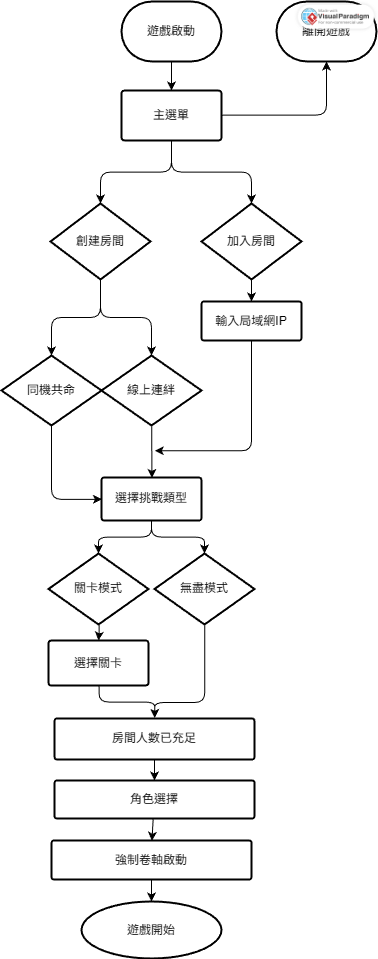
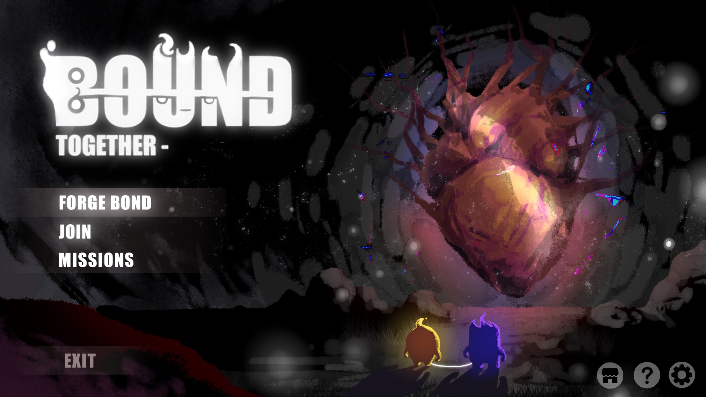
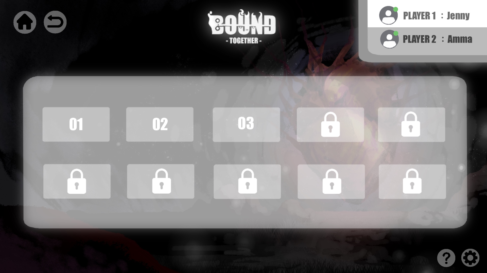
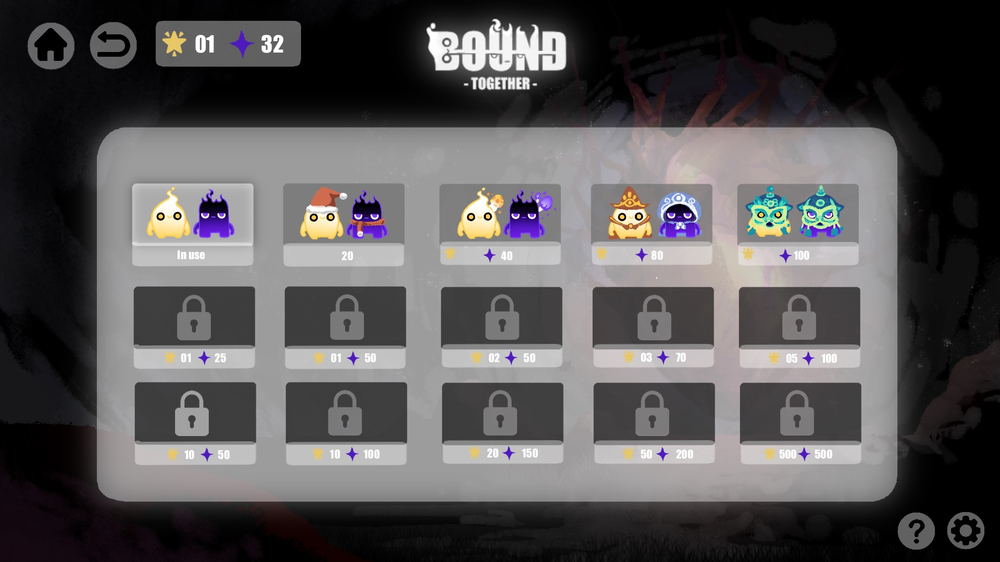

開發團隊：黃玟潔、楊舒喩、孫韻文、呂友辰、許立楷、陳天豪
遊戲名稱：BOUNDTOGETHER
遊戲類型：雙人合作、酷跑
適用平台：Windows
開發軟體：Unity6000.3.2f1
故事大綱
在被稱為「迴音之境」的古老地下文明中，
一場名為「大寂靜」的災難凍結了世界，
兩個微小的生命體從將熄滅的微光中誕生了，祂們就是光與影的精靈，
他們被一條「繫線」永遠束縛，唯有透過無盡的合作奔跑與彼此的信任，
才能用他們不滅的羈絆，成為世界的永恆光流，抵抗虛無之黯的侵蝕。
遊戲流程

核心玩法與機制
關卡模式：目標是在時間限制內跑完設定的距離，關卡難度隨進度增加 (時間更短、機關更複雜)。
無盡模式：挑戰極限奔跑距離，難度隨距離無限遞增，直到光心命數耗盡或被吞噬，可以在全台排行榜競賽。
強制捲軸：畫面以固定的速度向左捲動，玩家必須持續前進，避免被捲軸吞噬。
繫線：連結兩位玩家、也是遊戲的核心，繫線會因玩家的拉扯出現各種反應。
角色設計
一、光精靈
.jpg)
造型： 圓潤、向上流動的形狀，柔和的暖黃色光暈，「動力」：象徵希望、輕盈與向前推進的動能。
特徵： 圓潤雙眼與上揚微笑，直觀傳達希望、樂觀與純真。
配色： 以淺黃至微橘的漸變構成主體，邊緣帶有模糊的光暈，象徵世界的記憶與希望、光明、溫暖與動力。
一、影精靈
.jpg)
造型： 堅固、下沉的方塊身軀，頂部有尖銳的火焰狀輪廓，「錨點」：象徵沉穩、堅定與警惕的防禦者。
特徵： 單眼、筆直的嘴巴，傳達警惕、沉穩與理性，負責觀察危險、提供穩固的拉力。
配色： 以深藍至紫黑的漸變構成主體，邊緣由銳利的紫色或深藍色光芒勾勒，象徵世界的殘響與警惕、沉穩、理性與防禦。
三、怪物設計

a.闇影吞噬者
攻擊模式與傷害：通常出現在最底下的通道，緩慢但穩定地向右移動，若玩家被追上，會被直接吞噬，兩位玩家同時損失一條生命。
世界觀設定：牠是「虛無之黯」對生命能量最原始渴望的具現，目標是將一切發光的、有活力的個體連同其存在的痕跡一同吞入虛無之中。
玩家躲避策略 (合作機制)：保持高速度，兩位玩家必須完美同步跳躍與擺盪。
b.羈絆截斷者
攻擊模式與傷害：牠平時處於偽裝休眠狀態，只要玩家的本體觸碰到尖刺，會瞬間喚醒其內核。截斷者將瘋狂擴張並粉碎周圍的一切，導致該關卡現實崩壞，遊戲直接終結。
世界觀設定：截斷者並非主動掠食者，而是大災難後世界產生的「防衛性病毒」，牠們將所有「連結（繫線）」視為干擾大寂靜的雜訊。
玩家躲避策略 (合作機制)：面對分岔路徑，玩家必須快速溝通，一旦選擇好路徑（例如繞過上方），兩位精靈嚴禁分開行走。
c.無聲利刃
攻擊模式與傷害：牠們隱藏在環境陰影中，會以極快的速度突然出現撤回。
世界觀設定：牠們代表「大寂靜」災難後世界中潛藏的、不可預知的危險，就像災難發生時一樣，毀滅總是突然且無聲地降臨，旨在考驗倖存者的警覺性與反應本能。
玩家躲避策略 (合作機制)：無聲利刃雖然快速，但通常有固定的伸縮規律（每隔 2 秒伸出一次），玩家需要停下來觀察其節奏同時注意不被捲軸捲入。
四、道具設計
.jpg)
專屬藥水：
設有黃色與紫色藥水，精靈只能使用自己的藥水恢復生命，綠色藥水屬於陷阱道具，任何一方拾取會立即導致兩位玩家同時扣除一條生命。
迴音碎片：
收集沿途的「光之民」能量碎片（迴音），用於強化「光流」（分數增加），累積的光流可用於兌換皮膚等獎勵，增強玩家的收集與遊玩動機。
UI設計

.JPG)
.JPG)
.JPG)


| 關卡細部設計 | 工作分配 | 寒假時程表 |
pipbi.xm@gmail.com
Instagram｜@pipbi.xm
Always open for collaboration & creative ideas.